<?php
include_once('../../layout/header.html');
include_once('../../layout/header_sub.html');
?>

<div class="page-header d-print-none">
    <div class="container-xl">
        <div class="row g-2 align-items-center">
            <div class="col">
                <!-- Page pre-title -->
                <div class="page-pretitle fs-4 mb-2">
                    홈 > 디자인 > 사이트 색상 지정
                </div>
                <h2 class="page-title">
                    사이트 색상 지정
                </h2>
            </div>
        </div>
    </div>
</div>

<!-- Page body -->
<div class="page-body">
    <div class="container-xl">
        <form action="">
        <div class="list-btns justify-content-end mb-3">
            <div>
                <button type="submit" class="btn btn-primary">저장</button>
            </div>
        </div>

        <div class="row">
            <div class="col-12">
                <div class="card">
                    <div class="card-body">
                        <div class="row">
                            <div class="col-lg-6">
                                <div class="subheader mb-2 required">사용자 배경 컬러 지정</div>
                                <div class="input-group">
                                    <input type="color" name="main-bg-color" class="form-control form-control-color w-100" value="#f2f2f2">
                                </div>
                                <script>
                                    $(document).on('change', 'input[name="main-bg-color"]', function () {
                                        $('.color_preview .bg').css('background-color', $(this).val());
                                    })
                                </script>
                            </div>
                            <div class="col-lg-6">
                                <div class="subheader mb-2 required">키 버튼 컬러</div>
                                <div class="input-group">
                                    <input type="color" name="main-button-color" class="form-control form-control-color w-100" value="#333333">
                                </div>
                                <script>
                                    $(document).on('change', 'input[name="main-button-color"]', function () {
                                        $('.color_preview .btn_color').css('background-color', $(this).val());
                                    })
                                </script>
                            </div>
                            <div class="col-lg-12">
                                <div class="subheader mb-2 center_title">미리보기</div>
                                <div class="color_preview">
                                    <div class="bg" style="background-color:#f2f2f2;"><!-- 사용자 배경 컬러 지정 -->
                                        
                                        <div class="btn1 btn_color" style="background-color:#333333;">1/3</div><!-- 키 버튼 컬러 -->
                                        <div class="btn2 btn_color" style="background-color:#333333;"><span>ID카드</span></div><!-- 키 버튼 컬러 -->
                                    </div>
                                </div>
                            </div>
                        </div>
                    </div>
                </div>
            </div>
        </div>

        <div class="list-btns justify-content-end mt-3">
            <div>
                <button type="submit" class="btn btn-primary">저장</button>
            </div>
        </div>
        </form>
    </div>
</div>


<?php
include_once('../../layout/footer_sub.html');
include_once('../../layout/footer.html');
?>